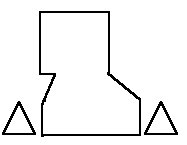

According to the typology given in Nockert, Type 2 Hoods are typified as
"Hood cut in two equal parts, with a tailored, slightly ridged seam above the skull. Upper part of liripipe usually cut in one piece with the hood. Large cape (20-33 cm long). Long liripipe (60-84 cm). Liripipe width varies between 1.4 and 5 cm."
There is also a gore in the front, and sometimes in the back, and a somewhat tailored neck seam. This group is made up from four hoods from Herjolfsnes, and comprises Norlund's "Type I": no. 65, no. 66, no. 67, and no. 70. The major difference between the Nockert Type 1 and 2 is the existance of a seam separating the side pieces.
Return to Contents
Some Clothing of the Middle Ages, by I. Marc Carlson, Copyright 1996 This code is given for the free exchange of information, provided the Author's Name is included in all future revisions, and no money change hands-